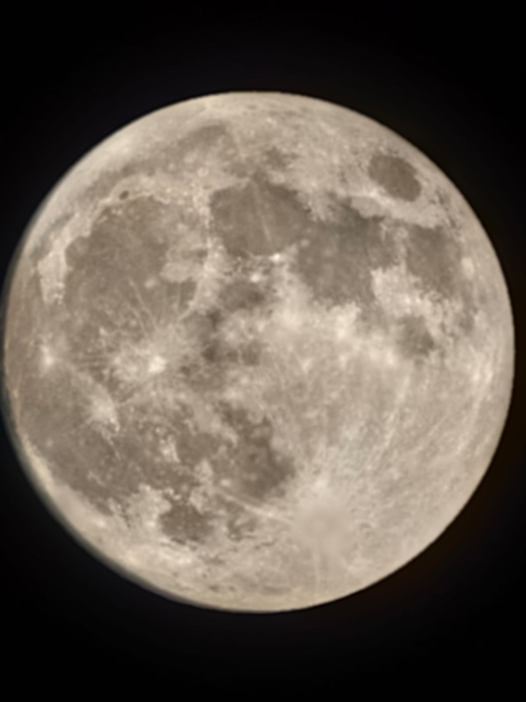

/* manual override accepted. entering alternate dimensions... */

Pehle tera signal aaya tha, par mere sensor ne miss kar diya,
Apne hi orbit mein ghoomte hue, maine us faint light ko dismiss kar diya.
Phir safar mein raaste takraaye, ek hi trajectory mein aaye hum,
Laga jaise physical space mein ek naye constellation mein dhale hum.
Aamne-saamne toh humari wavelength ekdum clear aur bright hai,
Par door jaate hi lagta hai, jaise beech mein lightyears ki flight hai.
Socha virtual space mein bhi is binary orbit ko thoda aur badhaoon,
Ek request ka probe bheja, ki teri galaxy thodi aur explore kar paoon.
Pehle tune connection accept kiya, laga network establish ho gaya,
Phir achanak firewall laga di, mera signal vacuum mein kho gaya.
Samne se milti hai toh gravity bilkul normal si lagti hai,
Par cyberspace mein teri boundary ek Event Horizon si banti hai.
Ek doosre frequency pe transmission abhi bhi thodi baaki hai,
Par wahan bhi tere replies aane mein lagti sadiyan kaafi hain.
Tera core active dikhta hai, system pe online tu rehti hai roz,
Par mere messages ka response aata hai ek lamba time-dilation ka pause.
Koi anomaly hai ya dark matter, tu saaf tarah explain nahi karti,
Physical dimensions mein sab theek hai, par online physics kaam nahi karti.
Main is Dual Nature ki reality mein sach mein confuse ho raha hoon,
Ek taraf warm radiation hai, doosri taraf cold vacuum mein kho raha hoon.
Agar meri orbit se problem hai, toh koi clear error code toh bata de,
Is aadhi-adhoori baaton ke nebula se meri trajectory nikaal de.
Par ummeed hai ek din yeh communication lag aur spacetime warp theek hoga,
Jab real aur virtual, dono dimensions mein humara alignment ek hoga.